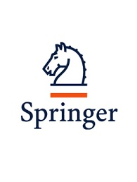

Publications
Thesis
[Ph.D] Haoyu Yang,
“Intelligent VLSI Design for Manufacturability”,
Chinese University of Hong Kong, Hong Kong, July, 2020
[paper]
Books/Book Chapters
|
 |
[B1] Haoyu Yang, Yibo Lin, Bei Yu,
“Machine Learning for Mask Synthesis and Verification”,
in Machine Learning Applications in Electronic Design Automation, Mark Ren eds., Springer, 2022.
(paper)
|
Papers
Accepted
[J17] Xiaoxiao Liang, Yikang Ouyang, Haoyu Yang, Bei Yu, Yuzhe Ma,
“RL-OPC: Mask Optimization with Deep Reinforcement Learning”,
accepted by IEEE Transactions on Computer-Aided Design of Integrated Circuits and Systems (TCAD).
2024
[C30] Tao Zhang, Haoyu Yang, Kang Liu, Zhiyao Xie,
“APPLE: An Explainer of ML Predictions on Circuit Layout at the Circuit-Element Level”,
IEEE/ACM Asian and South Pacific Design Automation Conference (ASPDAC), Incheon, Jan 22-25, 2024.
2023
[C29] Mingjie Liu, Haoyu Yang, Brucek Khailany, Haoxing Ren,
“An Adversarial Active Sampling-based Data Augmentation Framework for AI-Assisted Lithography Modeling”,
IEEE/ACM International Conference on Computer-Aided Design (ICCAD), San Francisco, CA, Oct 29- Nov 2, 2023.
[J16] Ziyi Wang, Zhuolun He, Chen Bai, Haoyu Yang, Bei Yu,
“Efficient Arithmetic Block Identification with Graph Learning and Network-flow”,
IEEE Transactions on Computer-Aided Design of Integrated Circuits and Systems (TCAD), vol. 42, no. 08, pp. 2591–2603, 2023.
[C28] Guojin Chen, Zehua Pei, Haoyu Yang, Yuzhe Ma, Bei Yu, Martin Wong,
“Physics-Informed Optical Kernel Regression Using Complex-valued Neural Fields”,
ACM/IEEE Design Automation Conference (DAC), San Francisco, CA, July 09-13, 2023.
[C27] Guojin Chen, Haoyu Yang, Bei Yu,
“GPU Accelerated Matrix Cover Algorithm for Multiple Patterning Layout Decomposition”,
SPIE Intl. Symp. Advanced Lithography Conference, San Jose, Feb. 26–Mar. 02, 2023.
[C26] Haoyu Yang, Haoxing Ren,
“Enabling Scalable AI Computational Lithography with Physics-Inspired Models”,
IEEE/ACM Asian and South Pacific Design Automation Conference (ASPDAC), Tokyo, Jan 16-19, 2023.
2022
[J15] Haoyu Yang, Shuhe Li, Wen Chen, Piyush Pathak, Frank Gennari, Ya-Chieh Lai and Bei Yu,
“DeePattern: Layout Pattern Generation with Transforming Convolutional Auto-Encoder”,
IEEE Transactions on Semiconductor Manufacturing (TSM), vol. 35, no. 1, pp. 67–77, 2022.
(Best Paper Award)
[J14] Guojin Chen, Wanli Chen, Qi Sun, Yuzhe Ma, Haoyu Yang, Bei Yu,
“DAMO: Deep Agile Mask Optimization for Full Chip Scale”,
IEEE Transactions on Computer-Aided Design of Integrated Circuits and Systems (TCAD), vol. 41, no. 9, pp. 3118–3131, 2022.
[J13] Hao Geng, Haoyu Yang, Lu Zhang, Jin Miao, Fan Yang, Xuan Zeng, Bei Yu,
“Hotspot Detection via Attention-based Deep Layout Metric Learning”,
IEEE Transactions on Computer-Aided Design of Integrated Circuits and Systems (TCAD), vol. 41, no. 8, pp. 2685–2698, 2022.
[J12] Wei Zhong, Shuxiang Hu, Yuzhe Ma, Haoyu Yang, Xiuyuan Ma, Bei Yu,
“Deep Learning-Driven Simultaneous Layout Decomposition and Mask Optimization”,
IEEE Transactions on Computer-Aided Design of Integrated Circuits and Systems (TCAD), vol. 41, no. 3, pp. 709–722, 2022.
[J11] Ran Chen, Wei Zhong, Haoyu Yang, Hao Geng, Fan Yang, Xuan Zeng, Bei Yu,
“Faster Region-based Hotspot Detection”,
IEEE Transactions on Computer-Aided Design of Integrated Circuits and Systems (TCAD), vol. 41, no. 3, pp. 669–680, 2022.
[paper]
[C25] Mingjie Liu, Haoyu Yang, Zongyi Li, Kumara Sastry, Saumyadip Mukhopadhyay, Selim Dogru, Anima Anandkumar, David Pan, Brucek Khailany, Vivek Singh, Haoxing Ren,
“An Adversarial Active Sampling-based Data Augmentation Framework for Manufacturable Chip Design”,
Neural Information Processing Systems ML for Systems Workshop, New Orleans, LA, Dec 3, 2022.
[C24] Haoyu Yang, Zongyi Li, Kumara Sastry, Saumyadip Mukhopadhyay, Mark Kilgard, Anima Anandkumar, Brucek Khailany, Vivek Singh, Haoxing Ren,
“Generic Lithography Modeling with Dual-band Optics-Inspired Neural Networks”,
ACM/IEEE Design Automation Conference (DAC), San Francisco, CA, June 10–14, 2022.
[C23] Haoyu Yang, Kit Fung, Yuxuan Zhao, Yibo Lin, Bei Yu,
“Mixed-Cell-Height Legalization on CPU-GPU Heterogeneous Systems”,
IEEE/ACM Proceedings Design, Automation and Test in Europe (DATE), Antwerp, Belgium, Mar 16–23, 2022.
2021
[J10] Guyue Huang, Jingbo Hu, Yifan He, Jialong Liu, Mingyuan Ma, Zhaoyang Shen,
Juejian Wu, Yuanfan Xu, Hengrui Zhang, Kai Zhong, Xuefei Ning, Yuzhe Ma, Haoyu Yang, Bei Yu, Huazhong Yang, Yu Wang,
“Machine Learning for Electronic Design Automation: A Survey”,
ACM Transactions on Design Automation of Electronic Systems (TODAES), vol. 25, no. 5, 2021.
[J9] Haoyu Yang, Wei Zhong, Yuzhe Ma, Hao Geng, Ran Chen, Wanli Chen, Bei Yu,
“VLSI Mask Optimization: From Shallow To Deep Learning”,
Integration, the VLSI Journal, vol. 77, Mar., pp. 96–103, 2021.
[J8] Haocheng Li, Satwik Patnaik, Abhrajit Sengupta, Haoyu Yang, Johann Knechtel, Bei Yu, Evangeline F.Y. Young, Ozgur Sinanoglu,
“Deep Learning Analysis for Split Manufactured Layouts with Routing Perturbation”,
IEEE Transactions on Computer-Aided Design of Integrated Circuits and Systems (TCAD), vol. 40, no. 10, pp. 1995–2008, 2021.
[J7] Haoyu Yang, Shuhe Li, Cyrus Tabery, Bingqing Lin and Bei Yu,
“Bridging the Gap Between Layout Pattern Sampling and Hotspot Detection via Batch Active Learning”,
IEEE Transactions on Computer-Aided Design of Integrated Circuits and Systems (TCAD), vol. 40, no. 7, pp. 1464–1475, 2021.
[C22] Zhuolun He, Ziyi Wang, Chen Bai, Haoyu Yang, Bei Yu,
“Graph Learning-Based Arithmetic Block Identification”,
IEEE/ACM International Conference on Computer-Aided Design (ICCAD), Munich, Germany, Nov 1–5, 2021.
[C21] Xiaopeng Zhang, Haoyu Yang, Evangeline F.Y. Young,
“Attentional Transfer is All You Need: Technology-aware Layout Pattern Generation”,
ACM/IEEE Design Automation Conference (DAC), San Francisco, CA, Dec 5–9, 2021.
[C20] Yifeng Xiao, Miaodi Su, Haoyu Yang, Jianli Chen, Jun Yu, Bei Yu,
“Low-Cost Lithography Hotspot Detection with Active Entropy Sampling and Model Calibration”,
ACM/IEEE Design Automation Conference (DAC), San Francisco, CA, Dec 5–9, 2021.
[C19] Wei Li, Guojin Chen, Haoyu Yang, Ran Chen, Bei Yu,
“Learning Point Clouds in EDA”,
ACM International Symposium on Physical Design (ISPD), Mar 21-24, 2021.
[C18] Haoyu Yang, Shifan Zhang, Kang Liu, Siting Liu, Benjamin Tan, Ramesh Karri, Siddharth Garg, Bei Yu, Evangeline F.Y. Young,
“Attacking a CNN-based Layout Hotspot Detector Using Group Gradient Method”,
IEEE/ACM Asian and South Pacific Design Automation Conference (ASPDAC), Tokyo, Jan. 18–21, 2021.
2020
[J6] Kang Liu, Haoyu Yang, Yuzhe Ma, Benjamin Tan, Bei Yu, Evangeline F. Y. Young, Ramesh Karri, Siddharth Garg,
“Are Adversarial Perturbations a Showstopper for ML-Based CAD? A Case Study on CNN-Based Lithographic Hotspot Detection”,
ACM Transactions on Design Automation of Electronic Systems (TODAES), vol.25, no.5, 2020.
[J5] Hao Geng, Wei Zhong, Haoyu Yang, Yuzhe Ma, Joydeep Mitra and Bei Yu,
“SRAF Insertion via Supervised Dictionary Learning”,
IEEE Transactions on Computer-Aided Design of Integrated Circuits and Systems (TCAD),
vol.39, no.10, pp.2849-2859, 2020.
[J4] Haoyu Yang, Shuhe Li, Zihao Deng, Yuzhe Ma, Bei Yu and Evangeline F. Y. Young,
“GAN-OPC: Mask Optimization with Lithography-guided Generative Adversarial Nets”,
IEEE Transactions on Computer-Aided Design of Integrated Circuits and Systems (TCAD),
vol.39, no.10, pp.2822-2834, 2020.
[C17] Hao Geng, Haoyu Yang, Lu Zhang, Jin Miao, Fan Yang, Xuan Zeng, Bei Yu,
“Hotspot Detection via Attention-based Deep Layout Metric Learning”,
IEEE/ACM International Conference on Computer-Aided Design (ICCAD), Nov. 2–5, 2020.
[C16] Guojin Chen, Wanli Chen, Yuzhe Ma, Haoyu Yang, Bei Yu,
“DAMO: Deep Agile Mask Optimization for Full Chip Scale”,
IEEE/ACM International Conference on Computer-Aided Design (ICCAD), Nov. 2–5, 2020.
[C15] Wei Zhong, Shuxiang Hu, Yuzhe Ma, Haoyu Yang, Xiuyuan Ma, Bei Yu,
“Deep Learning-Driven Simultaneous Layout Decomposition and Mask Optimization”,
ACM/IEEE Design Automation Conference (DAC), San Francisco, CA, July 19–23, 2020.
[C14] Haoyu Yang, Wei Zhong, Yuzhe Ma, Hao Geng, Ran Chen, Wanli Chen, Bei Yu,
“VLSI Mask Optimization: From Shallow To Deep Learning”,
IEEE/ACM Asian and South Pacific Design Automation Conference (ASPDAC), Beijing, Jan. 13–16, 2020.
2019
[J3] Haoyu Yang, Jing Su, Yi Zou, Yuzhe Ma, Bei Yu, Evangeline F. Y. Young,
“Layout Hotspot Detection with Feature Tensor Generation and Deep Biased Learning”,
IEEE Transactions on Computer-Aided Design of Integrated Circuits and Systems (TCAD),
vol.38, no.6, pp.1175-1187, 2019.
[C13] Haoyu Yang, Wen Chen, Piyush Pathak, Frank Gennari, Ya-Chieh Lai, Bei Yu,
“Automatic Layout Generation with Applications in Machine Learning Engine Evaluation”,
ACM/IEEE Workshop on Machine Learning for CAD (MLCAD), Alberta, Canada, Sep. 3–4, 2019.
[C12] Haocheng Li, Satwik Patnaik, Abhrajit Sengupta, Haoyu Yang, Johann Knechtel, Bei Yu, Evangeline F.Y. Young, Ozgur Sinanoglu,
“Attacking Split Manufacturing from a Deep Learning Perspective”,
ACM/IEEE Design Automation Conference (DAC), Las Vegas, NV, June 2–6, 2019.
[C11] Ran Chen, Wei Zhong, Haoyu Yang, Hao Geng, Xuan Zeng, Bei Yu,
“Faster Region-based Hotspot Detection”,
ACM/IEEE Design Automation Conference (DAC), Las Vegas, NV, June 2–6, 2019.
[C10] Haoyu Yang, Piyush Pathak, Frank Gennari, Ya-Chieh Lai and Bei Yu,
“DeePattern: Layout Pattern Generation with Transforming Convolutional Auto-Encoder”,
ACM/IEEE Design Automation Conference (DAC), Las Vegas, NV, June 2–6, 2019.
[C9] Haoyu Yang, Piyush Pathak, Frank Gennari, Ya-Chieh Lai and Bei Yu,
“Hotspot Detection Using Squish-net”,
SPIE Intl. Symp. Advanced Lithography Conference, San Jose, CA, Feb. 24–Feb. 28, 2019.
[C8] Haoyu Yang, Piyush Pathak, Frank Gennari, Ya-Chieh Lai and Bei Yu,
“Detecting Multi-Layer Layout Hotspots with Adaptive Squish Patterns”,
IEEE/ACM Asian and South Pacific Design Automation Conference (ASPDAC), Tokyo, Jan 21-24, 2019.
[C7] Hao Geng, Haoyu Yang, Yuzhe Ma, Joydeep Mitra and Bei Yu,
“SRAF Insertion via Supervised Dictionary Learning”,
IEEE/ACM Asian and South Pacific Design Automation Conference (ASPDAC), Tokyo, Jan 21-24, 2019. (Best Paper Award Nomination)
2018
[C6] Hao Geng, Haoyu Yang, Xuan Zeng and Bei Yu,
“Sparse VLSI Layout Feature Extraction: A Dictionary Learning Approach”,
IEEE Computer Society Annual Symposium on VLSI, Hong Kong, China, July 9–11, 2018.
[C5] Haoyu Yang, Shuhe Li, Yuzhe Ma, Bei Yu and Evangeline F. Y. Young,
“GAN-OPC: Mask Optimization with Lithography-guided Generative Adversarial Nets”,
ACM/IEEE Design Automation Conference (DAC), San Francisco, CA, June 24–28, 2018.
2017
[J2] Haoyu Yang, Luyang Luo, Jing Su, Chenxi Lin and Bei Yu,
“Imbalance Aware Lithography Hotspot Detection: A Deep Learning Approach”,
Journal of Micro/Nanolithography, MEMS, and MOEMS (JM3), 16 (3), 033504, 2017.
[C4] Haoyu Yang, Yajun Lin, Bei Yu and Evangeline F. Y. Young,
“Lithography Hotspot Detection: From Shallow To Deep Learning”,
IEEE International System-on-Chip Conference (SOCC), Munich, Germany, September 5–8, 2017.
[C3] Haoyu Yang, Jing Su, Yi Zou, Bei Yu and Evangeline F. Y. Young,
“Layout Hotspot Detection with Feature Tensor Generation and Deep Biased Learning”,
ACM/IEEE Design Automation Conference (DAC), Austin, TX, June 18–22, 2017.
[C2] Haoyu Yang, Luyang Luo, Jing Su, Chenxi Lin and Bei Yu,
“Imbalance Aware Lithography Hotspot Detection: A Deep Learning Approach”,
SPIE Intl. Symp. Advanced Lithography Conference, San Jose, CA, Feb. 26–Mar. 2, 2017.
2016
[J1] Zaifeng Shi, Haoyu Yang, Wenxiang Cong and Ge Wang,
“An Edge-on Charge-transfer Design for Eenergy-resolved X-ray Detection”,
Physics in Medicine and Biology (PMB), 61 (11), 4183-4200, 2016.
[C1] Hang Zhang, Haoyu Yang, Bei Yu and Evangeline F. Y. Young,
“VLSI Layout Hotspot Detection Based on Discriminative Feature Extraction”,
IEEE Asia Pacific Conference on Circuits and Systems (APCCAS), Jeju, Oct. 25–28, 2016.
|